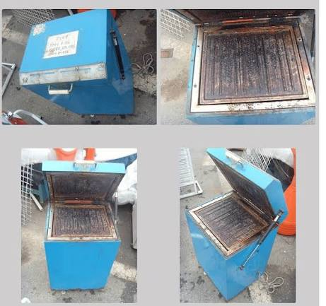
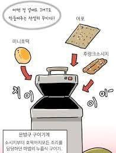

원본 : https://www.dogdrip.net/724096907
대충 열선 스티로폼 절단기보고
아파트에 저런거 설치하면 무슨 사고가 날지 모른다는 반응이 대부분인데...


로망의 시대(2000년대 초)
문방구마다 저 구이기계 없는 곳이 없었음.
딱히 돈 받는것도 아니라서 그냥 문방구서 쥐포나 쫀드기, 소시지같은거 산다음
뚜껑열고 넣고 닫으면
전자음으로 엘리제를 위하여가 흘러나오는데
음악이 끝나면 지글지글 웰던으로 익은 간식을 먹을 수 있었다.
더글로리에서 고데기로 문동은 괴롭히는거 보면서
'와 구이기계 지금까지 있었으면 뭐가 터져도 터졌겠는데' 하는 생각을 했었음

낭만이 아니라 야만의 시대..